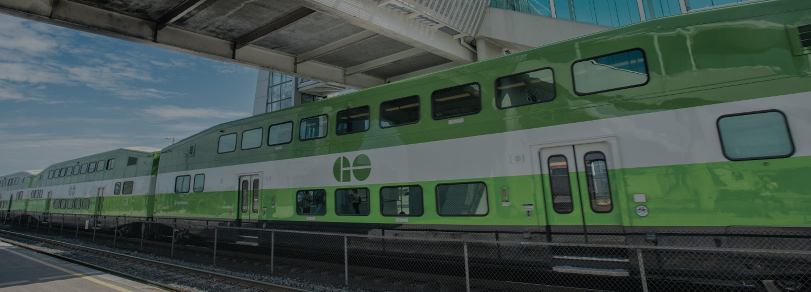
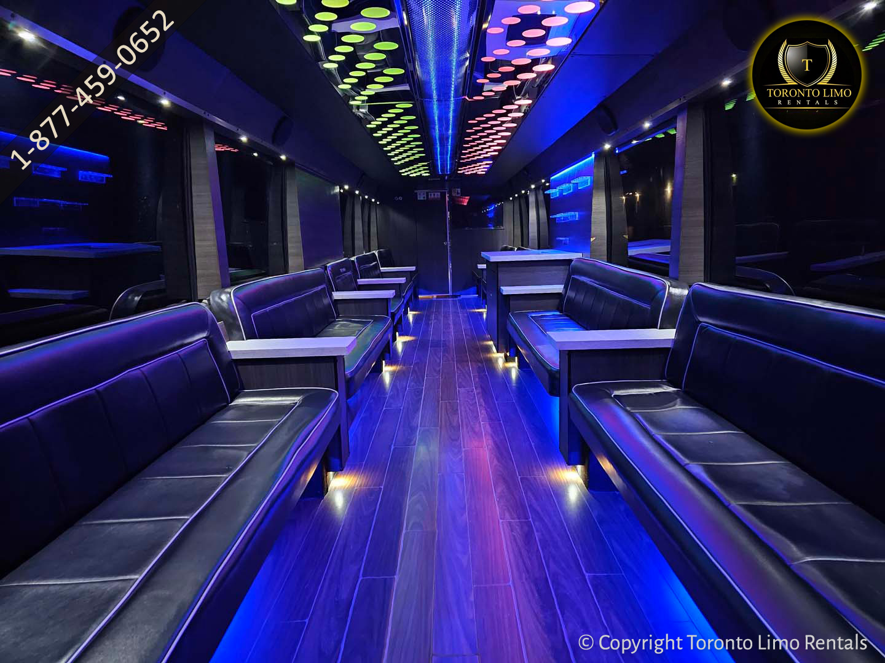

Transportation
Most transportation will be done through public transit (except for day of the celebration, which will be done by private limo bus). Please note that Ontario public transit is entirely different than Florida public transit. Public transit in Ontario is reliable, comfortable, and usable to get to most places.
Below you will find all forms of transit you might need throughout your trip, please note that there is a difference between GO Transit (buses and trains) and City transit (Oakville transit, Toronto transit and Niagara transit). GO Transit is for inter-city travel, when travelling between cities we will use GO Transit. City transit is for transportation within that city; Oakville transit will only cover travelling within Oakville.
Celebration Limo Bus
Since our celebration venue is in Cambridge Ontario but we are haivng everyone from Florida stay in Oakville Ontario we have hired a limo party bus to both drop everyone off at the venue and to drive everyone back.
We have hired Oakville Limo Services for this and will be using their 45-50 passenger limo party bus - M3 which includes leather seats, colour-changing LED lights, and a Bluetooth surround sound system. (Interior Pictured Below)

GO Trains
GO Trains provide a convenient and efficient way to travel across the Greater Toronto Area (GTA), including key connections between Oakville and Toronto. These trains are part of the regional public transit system and are well-known for their reliability and comfort, making them a popular choice for transport.
Service Details
Oakville to Toronto: The Oakville GO Station is a major stop along the Lakeshore West line, which runs directly to Union Station in downtown Toronto. The journey typically takes around 30 minutes, making it a fast option for reaching the city. Trains run frequently throughout the day, particularly during peak commuting hours, and there is a late-night service for those returning after an evening in Toronto.
Union Station: Union Station is Toronto’s central hub for GO Transit, connecting to multiple other GO lines, as well as the TTC subway, streetcars, and buses. From Union, travelers can easily access key Toronto attractions such as the CN Tower, Ripley's Aquarium, and the Toronto Islands.
Payment Methods (All Prices will be in CAD)
GO Transit offers a variety of payment options to ensure flexibility and convenience:
-
E-Tickets: For those preferring digital options, GO Transit offers e-tickets that can be purchased online and stored on your phone. These e-tickets are valid for one-way or two-way return trips and must be activated before boarding the train. Special weekend passes for unlimited travel on Saturdays, Sundays, or holidays are also available for a flat rate of $10 per day.
-
PRESTO Card: The most common payment method by Canadians is the PRESTO card, which allows riders to tap on and off at the beginning and end of their journey. PRESTO cards can be loaded with funds online, through the app, or at stations. It also offers discounts for seniors, students, and frequent travelers. PRESTO Cards cost $5 each (plus the amount loaded on to the card) and can be bought at many retail stores as well as at stations and the airport. PRESTO users have a slightly reduced fare but it will take a few trips to even out the $5 initial cost.
-
Credit or Debit Card: As of 2023, GO Transit has introduced contactless payments using credit or debit cards. You can tap your Visa, Mastercard, or American Express directly on a PRESTO reader, or use your mobile wallet via Apple Pay or Google Pay. Make sure you tap off with the same card or device you used to tap on to avoid being overcharged. NOTE: if using a US bank card there will most often be transaction fees.
-
Physical Tickets: Physical GO Train tickets can be purchased from the GO Station in person.
GO Buses
GO Buses are an essential part of the Greater Toronto Area (GTA) public transit system, providing extensive coverage across the region, including key routes connecting Oakville and Toronto. Operated by Metrolinx, these buses offer a reliable and comfortable alternative to GO Trains, especially for areas not directly served by rail.
Service Details
Oakville to Toronto: GO Buses frequently operate between Oakville and Toronto, providing services that complement the GO Train schedule. The Oakville GO Station serves as a major hub for both trains and buses, with several bus routes connecting to downtown Toronto and other parts of the GTA. The buses offer direct routes to Union Station as well as connections to various subway stations, making it easy for travelers to reach different parts of Toronto.
Payment Methods (All prices will be in CAD)
-
E-Tickets: E-tickets can be purchased online before boarding. These tickets are stored on your phone and must be activated prior to your trip. E-tickets are ideal for one-way or return journeys and includes a weekend travel pass for a flat $10 per day fee and you can take GO wherever you want on Saturdays, Sundays, and holidays.
-
PRESTO Card: Like GO Trains, the PRESTO card is the primary payment method for GO Buses for Canadians. Riders tap their PRESTO card when boarding and again when exiting to ensure they are charged the correct fare based on the distance traveled. PRESTO Cards cost $5 each (plus the amount loaded on to the card) and can be bought at many retail stores as well as at stations and the airport. PRESTO users have a slightly reduced fare but it will take a few trips to even out the $5 initial cost.
-
Credit or Debit Card: GO Buses now support contactless payment with credit or debit cards. You can tap your Visa, Mastercard, or American Express directly on the bus’s PRESTO reader. This payment method also works with mobile wallets like Apple Pay and Google Pay. NOTE: if using a US bank card there will most often be transaction fees.
Airport Transportation Options
There are a few ways to get to and from the airport.
Public Transportation
-
Train: To use trains to get from the airport to Oakville GO you would take two trains (you can also take this route back to the airport but in reverse):
-
The UP (Express Pearson Airport): with their own stations this is a train directly from the airport to downtown Toronto. To view schedule and buy tickets click here.
-
GO Train: From where the UP arrives at Union Station you can take a train to Oakville GO station. This is called the Lakeshore West Line. To view the map and book tickets look at the GO Trains section on this website.
-
Buses: To use buses to get from the airport to Oakville GO you would take two buses (you can also take this route back just do these steps in reverse).
-
Bus 40 Towards Hamilton GO: From Pearson Airport Terminal 1 bus stop you can catch the GO bus 40 line towards Hamilton GO. You would get off at Trafalgar Rd. (Hwy 407 Park and Ride).
-
Bus line 22 Towards the Oakville GO Station: From where you got off at the Park and Ride you would get right on the 22 Bus which will take you to Oakville GO station, right by both hotel options.
Private Transportation
-
Taxi: Most taxi services have a flat rate for airport trips and can be booked either a head of time or can be caught at the airport without pre-booking. To look further at this option check out the Taxi section on this page.
-
Ride Share (Uber or Lyft): Unlike taxi services there is no flat rate for ride shares but they can sometimes be cheaper depending on demand so they are still worth looking at. To look further at this option check out the Ride Share section on this page.
Oakville Public Transit
Oakville Transit Website
Oakville Transit provides a reliable and convenient bus service within Oakville, making it easy to navigate the town. Oakville Transit buses are equipped with accessibility features, ensuring that everyone can use the service comfortably.
Payment Options (All prices will be in CAD and are subject to change but are consistent for any route)
-
PRESTO Card: This is the most convenient and commonly used method. You can load your PRESTO card with funds and tap it on the bus for a discounted fare of $3.40 per ride for adults. PRESTO Cards cost $5 each (plus the amount loaded on to the card) and can be bought at many retail stores as well as at stations and the airport. PRESTO users have a slightly reduced fare but it will take a few trips to even out the $5 initial cost.
-
Cash Fare: If you prefer to pay with cash, you can do so, but you must have the exact amount ready (no USD), as bus drivers do not provide change. The cash fare is $4.00 per ride for adults.
-
Contactless Payment: You can tap your credit card, debit card, or a mobile device with a digital wallet to pay directly on the bus. This option is especially convenient for tourists or those who do not have a PRESTO card. NOTE: if using a US bank card there will most often be transaction fees.
Toronto Public Transit
The Toronto Transit Commission (TTC) operates an extensive public transit network in Toronto, consisting of subways, buses, and streetcars. The TTC is one of the largest transit systems in North America, offering convenient and accessible transportation throughout the city and its surrounding areas.
Subway: The TTC subway system features four lines, with the busiest routes running through the downtown core and connecting major hubs. The subway is a popular choice for commuting and getting around the city quickly, especially during rush hours.
Buses and Streetcars: TTC buses and streetcars cover nearly every corner of Toronto, providing essential connections to subway stations and serving areas that the subway does not reach. The streetcar network, particularly in downtown Toronto, is iconic and offers a scenic way to travel through the city.
Payment Methods (All prices will be in CAD)
-
PRESTO Card: The most common method for paying TTC fares is the PRESTO card, a reloadable smart card that can be used across multiple transit systems in the Greater Toronto Area (GTA). You can load funds onto your PRESTO card online, at subway stations, or at select retail locations. PRESTO Cards cost $5 each (plus the amount loaded on to the card) and can be bought at many retail stores as well as at stations and the airport. PRESTO users have a slightly reduced fare but it will take a few trips to even out the $5 initial cost.
-
Credit/Debit Cards: As of August 2023, TTC riders can now pay directly with their contactless credit or debit cards, at fare gates, on buses, and streetcars. This option allows for a seamless experience without needing a PRESTO card, though it's essential to use the same card throughout your journey to avoid double charges. NOTE: if using a US bank card there will most likely be transaction fees.
-
Mobile Payment: Riders can also use mobile wallets such as Apple Pay or Google Pay linked to their credit or debit cards for contactless fare payment. NOTE: if using a US bank card there will most likely be transaction fees.
-
Cash: While cash is still accepted on TTC buses and streetcars, it’s less common due to the widespread availability of contactless payment options. Keep in mind that exact fare is required, and change is not provided (no USD).
Niagara Public Transit
Niagara Falls Transit provides reliable public transportation throughout the city of Niagara Falls, Ontario. The transit system includes regular bus routes, as well as specialized services like WEGO buses, which are geared specifically toward tourists.
The standard Niagara Falls Transit buses operate on fixed routes with varying schedules depending on the time of day and week. For visitors, WEGO buses are particularly useful as they connect hotels, key Niagara Parks attractions, and other points of interest. WEGO offers a hop-on, hop-off service with passes available for 24 or 48 hours, allowing tourists to explore the area conveniently.
Payment Methods (All prices will be in CAD)
-
Cash: You can pay your fare directly on the bus using Canadian coins or bills. U.S. currency is also accepted at par (meaning no conversion, USD will be treated as CAD), but no change is provided.
-
Digital Tickets: Passes can also be purchased through the Transit App, which provides a digital ticket that can be validated on the bus.
Exact fare is required when paying cash, as drivers do not provide change. Passengers are advised to ask for a transfer ticket if they need to switch buses during their journey. This ticket is valid for two hours and serves as proof of payment.
Ride-Sharing and Taxis
In Oakville and the broader GTA, ride-sharing services and taxis are popular and convenient options for transportation.
Ride-Sharing Services
These services are typically accessed via mobile apps, which allow you to request a ride, track your driver's arrival, and pay electronically. The most popular ride-sharing services available in this region are:
-
Uber: Uber is widely used across Ontario, offering a range of vehicle options from economical rides to more luxurious experiences. The app is easy to use, and payment is handled through the app. Uber Website
-
Lyft: Lyft is another popular choice, providing similar services to Uber with different vehicle options. Lyft is known for its user-friendly interface and reliable service throughout the GTA. Lyft Website
Taxi Services
-
Oakville United Taxi: Oakville United Taxi is a well-known taxi service in Oakville, providing 24/7 service with a fleet of clean and comfortable vehicles.
-
All Star Taxi: Operating in Oakville and nearby areas, All Star Taxi offers reliable service, including airport transfers and accessible vehicles.
-
Beck Taxi (Toronto): Beck Taxi is one of the largest and most recognized taxi services in Toronto, operating a large fleet that includes accessible taxis.
Both ride-sharing and traditional taxis offer practical solutions for getting around Oakville and the GTA. Ride-sharing apps like Uber and Lyft provide convenient, app-based service, while taxis remain a dependable choice, especially for those who prefer to book by phone or catch a ride on the spot. Each option offers distinct advantages depending on your specific transportation needs.
Copyright ©2025, by Rachel Echevarria-Porter